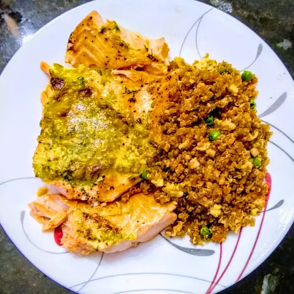

Quinoa Fried Rice Recipes

Quinoa Fried Rice
Healthy and easy dish that nourish your
body and saves time. Makes a great substitute for regular fried rice!
Ingredients
- 1½ cups water
- 1 cup quinoa
- 2½ tablespoons soy sauce
- 1½ tablespoons teriyaki sauce
Procedures
- Bring water and quinoa to a boil in a saucepan; season with salt.
Reduce heat to medium-low, cover, and simmer until quinoa is tender and water has
been absorbed, 15 to 20 minutes. Remove saucepan from heat and let sit for 5 minutes;
fluff quinoa with a fork. Refrigerate until cool, 8 hours to overnight.
- Mix soy sauce, teriyaki sauce, and sesame oil together in a bowl until sauce is evenly mixed.
- Heat 1 1/2 teaspoons oil in a large skillet over high heat; saute carrots and onion
for 2 minutes. Add 2 scallions, garlic, and ginger; saute until fragrant, about 2 minutes
more. Add the remaining 1 1/2 teaspoons oil and quinoa; cook until heated through, about 2 minutes.
- Stir sauce into quinoa mixture; cook and stir until evenly coated, about 2 minutes.
- Make well in the center of the quinoa mixture. Pour eggs into the well; cook and stir
until eggs are scrambled and cooked through, 2 to 3 minutes. Add peas and cook until heated
through, 2 to 3 minutes. Add remaining scallion.